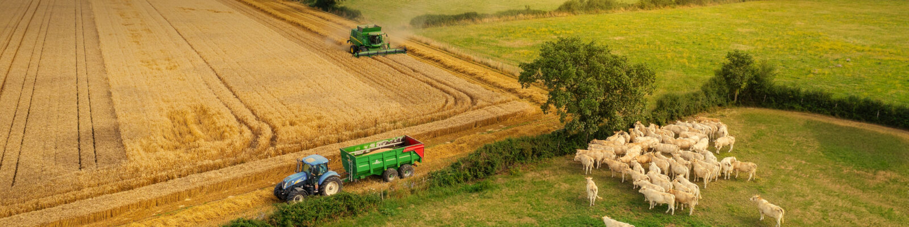
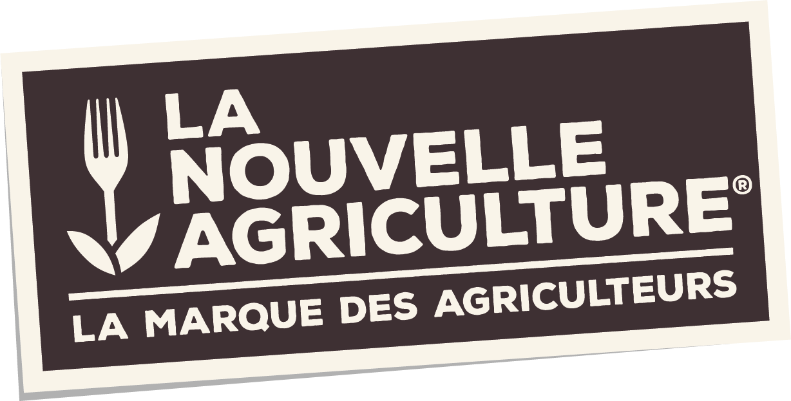
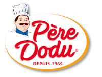
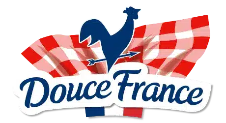

Demo Terrena
De l application traditionnelle a l experience agentique
Une meme base metier Terrena, trois niveaux de valeur logicielle pour les utilisateurs et pour les developpeurs.



Message cleTraditionnel = consulter. LLM = questionner. Agentique = orchestrer.
Ouvrir en expliquant que le demonstrateur a ete adapte au contexte Terrena: filieres, logistique, qualite, tracabilite et marques.
Application traditionnelle
- KPIs fixes et ecrans predefinis
- Cartes, tableaux et chronologie
- Lecture manuelle de l information
ExempleRetard de collecte La Nouvelle Agriculture a Ancenis.
ExempleRisque sanitaire pouvant impacter Pere Dodu.
ExempleSuivi export et tracabilite Ackerman.
Dire que l application est utile et rassurante, mais impose encore a l utilisateur de naviguer ecran par ecran.
Chatbot LLM
- Questions en langage naturel
- Synthese, comparaison, priorisation
- Acces plus rapide a l information
QuestionQuels incidents pourraient impacter Pere Dodu cette semaine ?
QuestionY a t il un risque pour les expeditions Ackerman ?
QuestionResume les priorites pour Douce France.
Insister sur le fait que l on ne change pas forcement les donnees, mais la facon de les interroger et de les rendre utiles.
Application agentique
- Comprend l intention metier
- Assemble une interface adaptee
- Oriente la coordination et la decision
ScenarioCellule de pilotage pour Pere Dodu et Gastronome Professionnels.
ScenarioCockpit de suivi export Ackerman.
ScenarioVue transverse La Nouvelle Agriculture.
Dire que l application n est plus seulement reponse, elle devient espace de travail dynamique pour la situation du moment.
Conclusion
- Traditionnel: navigation dans des ecrans fixes
- LLM: dialogue avec les donnees
- Agentique: orchestration d une action metier
Valeur TerrenaMeme socle de donnees, plus de rapidite, plus de contexte, plus d aide a la decision.
Finir sur le message pour les developpeurs: la valeur n est plus seulement dans l ecran, mais dans la capacite du systeme a composer une experience adapte au besoin.